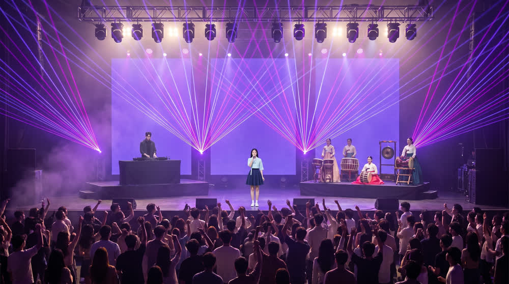
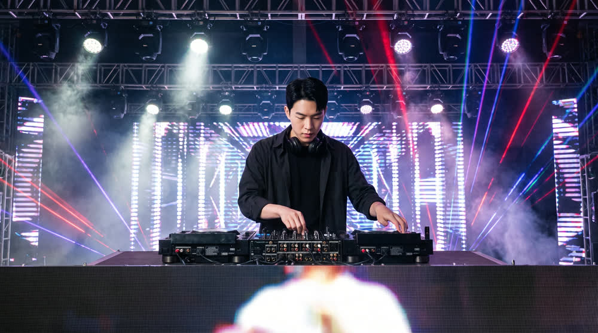
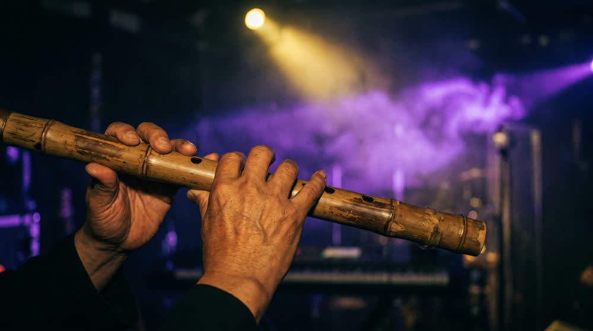
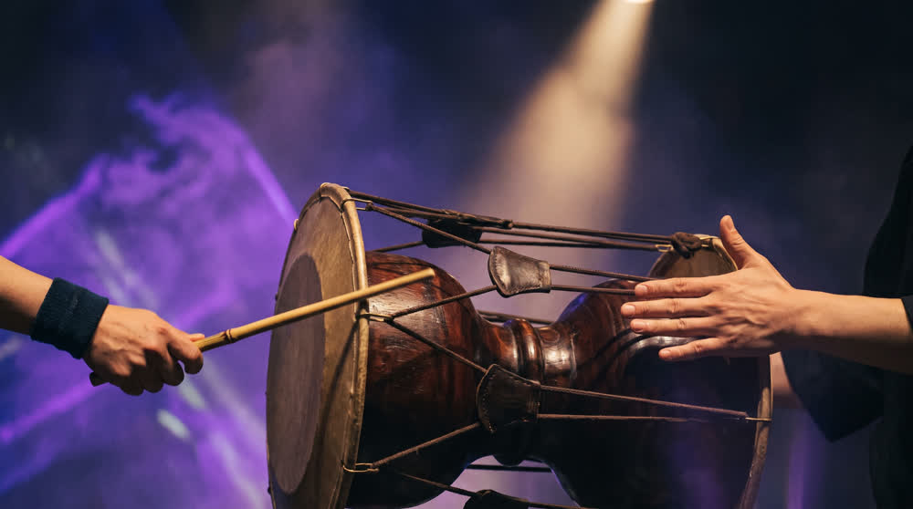

무대 여섯 장입니다. 옥상을 버리고 실내 공연장으로 옮겼습니다 — 낮밤·계절·날씨가 구조적으로 사라집니다. 컷 스물넷이 이 여섯 장에서 나옵니다.
🔒 「확정값 대조」는 오늘 새로 만든 자입니다. 이 회차에서 대표님 반려가 네 번 났는데 네 번 다 게이트 0건이었습니다 — 기존 게이트는 형식(6필드·글자수·한글)만 재고, 「대표님이 정하신 것이 프롬프트에 들어갔는가」는 아무도 안 봤습니다. 이제 확정값 21줄을 프롬프트와 기계로 맞춥니다.




국악 연주자의 손이 나이 든 손입니다(대금·태평소). 국악 연주자로는 자연스럽지만 20대 설정과는 다릅니다. 젊은 손으로 바꿀지는 취향이라 제가 정하지 않았습니다.
와이드에서 가수가 작습니다. 무대 전체를 담아서 그렇습니다 — 와이드 컷 일곱은 립싱크가 아니라 흐름을 보여 주는 자리라 괜찮다고 봅니다.
24컷을 발주합니다 — $11.34. 컷마다 동작 둘 · 관중이 블록마다 다르게 뛰고 · 조명이 블록마다 바뀝니다.